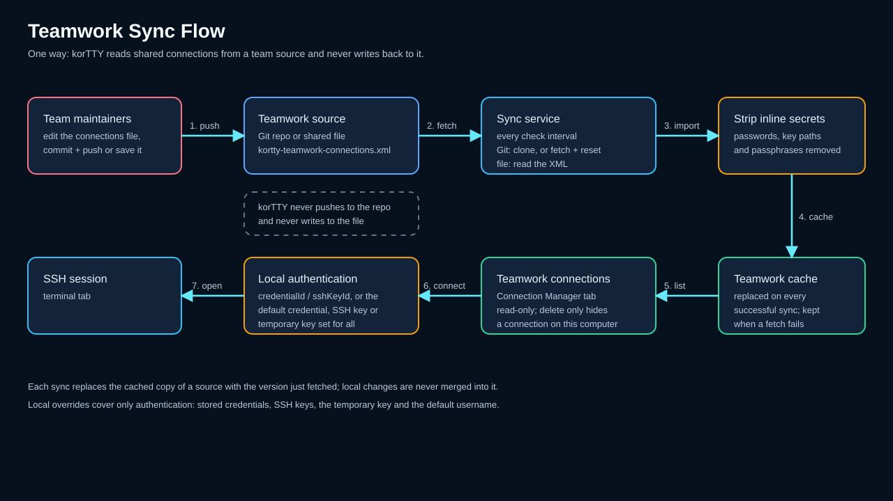

Teamwork (shared connections)¶
Share SSH connections with your team by syncing them from a Git repository or shared file. Teamwork sources are loaded into the Connection Manager alongside your local connections, kept in sync automatically, and safely stripped of inline passwords so credentials come only from your local encrypted storage. Sync is one way: korTTY reads from a source and never writes back to it.

Overview¶
Teamwork lets teams maintain a centralized library of connection configurations:
- Git repositories — Clone and keep in sync with a Git repo containing a
kortty-teamwork-connections.xmlfile (or legacyconnections.xml). - Shared files — Load connections from a local or network path. korTTY only reads the file.
- Automatic sync — Background syncing at a configurable interval checks for updates.
- Credential security — Shared connections do NOT carry inline passwords; only credential IDs and SSH key references.
- Local overrides — Your local credentials and SSH keys are merged with shared connection definitions.
- One-way sync — korTTY never pushes to a repository or writes to a shared file. Shared connections are changed in the source itself and arrive with the next sync.
Setting up teamwork sources¶
Open Teamwork → Teamwork Settings… to configure sources.
Add a source¶
- Click Add to create a new source.
- Choose the source Type:
- Git — Clone from an HTTPS, SSH, or git:// URL.
- Shared File — Read from a local or network path (e.g.,
file:///mnt/share/connections.xmlor//host/share/connections.xml). - Enter the Location:
- For Git: the clone URL.
- For Shared File: a local/network file path (can be a file:// URI or a UNC path).
- Set the Check Interval (1–1440 minutes; default: 15).
- Click OK to save.
Manage sources¶
The Teamwork Settings dialog lists all sources with their type, location, and sync interval:
| Column | Meaning |
|---|---|
| Type | Git or Shared File |
| Location | Repository URL or file path |
| Interval | Minutes between sync checks |
| Enabled | Toggle to enable/disable without deleting |
Use the buttons to: - Add — Create a new source. - Edit — Modify the selected source. - Delete — Remove the selected source. - Enable/Disable — Toggle the enabled state for the selected sources.
At the bottom, set the Default Check Interval (applies to new sources that don't specify one).
How synchronization works¶
Background sync¶
korTTY syncs teamwork sources in the background:
- When korTTY starts, it starts a background sync thread and syncs right away.
- Every N minutes (the shortest check interval among the sources enabled when korTTY started), it:
- Pulls/clones each source (Git) or reads the file (Shared File).
- Loads the connections XML.
- Replaces the cached copy of each source it fetched and refreshes the Connection Manager.
- If a source update fails, the previous cached version is kept.
Saving the Teamwork Settings syncs once right away. A changed check interval takes effect the next time korTTY starts.
Manual sync¶
Use Teamwork → Teamwork Settings… and click OK to trigger a sync immediately.
Version tracking¶
Each sync records a version token: - Git — The current commit hash. - Shared File — The file's last-modified timestamp.
If a shared connection's version token changes between syncs, a new version was fetched. On every successful sync korTTY replaces its cached copy of the source with the version it just fetched; nothing is merged with local changes. For a Git source, korTTY resets its own clone to the remote branch, so anything changed inside that clone is discarded. Local overrides cover only credentials and SSH keys (see Local overrides).
Shared connection file format¶
Create a kortty-teamwork-connections.xml file (or connections.xml for backward compatibility) in the root of your Git repo or shared file:
<?xml version="1.0" encoding="UTF-8"?>
<connections>
<connection id="prod-web-1">
<name>Prod Web Server 1</name>
<host>web1.example.com</host>
<port>22</port>
<username>deploy</username>
<group>Production/Web</group>
<authMethod>PUBLIC_KEY</authMethod>
<sshKeyId>key-prod-deploy</sshKeyId>
<credentialId>cred-prod-user</credentialId>
</connection>
</connections>
Do not include inline secrets
Teamwork connections must not include encryptedPassword, privateKeyPath, or privateKeyPassphrase. Instead:
- Use credentialId to reference a stored credential in Security → Credentials….
- Use sshKeyId to reference a stored SSH key in Security → SSH-Keys….
If inline secrets are found in the shared file, KorTTY strips them automatically (they are not loaded).
Using teamwork connections¶
Once a source is synced:
- Open Manage Connections… (or press Ctrl+M).
- Switch to the Teamwork connections tab.
- Double-click a teamwork connection to connect.
- Read-only — Teamwork connections are read-only, and korTTY never writes changes back to a source: Edit is unavailable on this tab, a connection cannot be dragged into another folder, and right-clicking a folder or an empty area opens no menu, so there is no way to add, rename or delete folders or to relax their host-key verification. To change a shared connection, edit it in the repository or shared file; the change arrives with the next sync.
The command palette lists the teamwork connections as well, marked Shared (Teamwork), so you can also connect by typing @ and part of a name.
Deleting a teamwork connection only hides it on this computer, also in the command palette; the source is not changed. In the Connection Manager's button column, Restore deleted brings hidden connections back and Refresh reloads the list from the last sync without fetching the source again.
Local overrides¶
- The credential and SSH key references (
credentialId,sshKeyId) of a shared connection are resolved from your local storage. - For shared connections that name neither, choose Authentication for all team connections on the Teamwork connections tab: a stored credential, an SSH key or Temporary SSH key. A stored credential that has a username uses it; for an SSH key or a temporary key, an optional Default username (SSH key) replaces the username from the source.
- If a credential or key is not found locally, you are prompted to provide it when connecting.
- Only authentication, including the username, can be overridden locally. Host, port, group and the other connection settings always come from the source.
Distinguish sources¶
Connections from every enabled source appear together on the Teamwork connections tab, arranged by the groups defined in the shared files. The tab does not show which source a connection came from; give each source its own group names if your team needs to tell them apart.
Git repository setup¶
To share connections via Git:
- Create a repository (e.g.,
ssh-connections). - Add a
kortty-teamwork-connections.xmlfile to the root with your connection definitions. - Commit and push.
- Share the repository URL (HTTPS or SSH) with team members.
- Team members add the URL in Teamwork → Teamwork Settings… → Add.
SSH vs. HTTPS¶
- HTTPS — Works without SSH key setup; may require a GitHub Personal Access Token or username/password (store the token securely).
- SSH — Requires
gitand a local SSH key in~/.ssh/id_rsa(or configured inssh-add).
Example repository layout¶
Version token¶
korTTY uses the commit hash of the tracked branch as the version token automatically. To see which version your team is on, run:
Shared file setup¶
To share connections via a file:
- Export your connections to a file: Connections → Export… → select connections → save as
.xml. - Place the file on a shared network path (e.g.,
//server/share/connections.xml). - Give team members read access to the file. korTTY only reads it, so only whoever maintains the file needs write access.
- Team members add the file path in Teamwork → Teamwork Settings… → Add.
Example paths¶
| Platform | Path format |
|---|---|
| Windows (network share) | //server/share/connections.xml or file:////server/share/connections.xml |
| Linux/macOS (NFS mount) | /mnt/teamshare/connections.xml or file:///mnt/teamshare/connections.xml |
| SMB/CIFS (mounted) | /Volumes/teamshare/connections.xml (macOS) |
Security considerations¶
Credentials are local-only
Shared connections do not carry passwords or key passphrases. Your local encrypted storage (master-password protected) holds the actual secrets. Team members must have their own credentials set up locally.
Git repositories should not store secrets
Never commit passwords, SSH key content, or API tokens to the teamwork repository. Use only credential IDs and key references.
File permissions
For shared files on network paths, give read access to team members only and write access only to whoever maintains the file. Ensure the path is not world-readable. Anyone who can change the file, or push to the tracked Git branch, decides which hosts, jump servers and tunnels the shared connections use on every team member's computer.
Audit trail
For Git-based teamwork, the commit history provides an audit trail. korTTY applies whatever the tracked branch contains at the next sync, so review changes before they are pushed to that branch.
Troubleshooting¶
Source is not syncing¶
- Open Teamwork → Teamwork Settings….
- Verify the source is Enabled.
- Check that the Location is correct and accessible:
- Git — Run
git clone <url>manually to test. - Shared File — Verify the file exists and is readable from your machine.
- Click OK to trigger a manual sync.
- Check the application log (
~/.kortty/kortty.log) for errors.
Connections appear but credentials are missing¶
- Open Security → Credentials… and Security → SSH-Keys….
- Verify that the credential IDs or SSH key IDs in the shared connections exist locally.
- If missing, add them manually or ask your team administrator to provide the IDs.
File path is not recognized (Windows/UNC)¶
Use forward slashes or the file:// URI format:
//server/share/connections.xml✓\\server\share\connections.xml✗ (backslashes may not parse correctly)file:////server/share/connections.xml✓ (UNC notation)